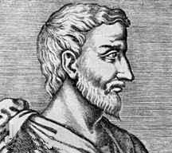

Pitágoras
(c. 582-c. 500 a.C.), filósofo y matemático griego, cuyas doctrinas
influyeron mucho en Platón. Nacido en la isla de Samos, Pitágoras
fue instruido en las enseñanzas de los primeros filósofos jonios
Tales de Mileto, Anaximandro y Anaxímenes. Se dice que Pitágoras
había sido condenado a exiliarse de Samos por su aversión a la
tiranía de Polícrates. Hacia el 530 a.C. se instaló en
Crotona, una colonia griega al sur de Italia, donde fundó un movimiento
con propósitos religiosos, políticos y filosóficos, conocido
como pitagorismo. La filosofía de Pitágoras se conoce sólo
a través de la obra de sus discípulos.
Doctrinas básicas
Los pitagóricos asumieron ciertos misterios, similares en muchos puntos a los enigmas del orfismo. Aconsejaban la obediencia y el silencio, la abstinencia de consumir alimentos, la sencillez en el vestir y en las posesiones, y el hábito del autoanálisis. Los pitagóricos creían en la inmortalidad y en la transmigración del alma. Se dice que el propio Pitágoras proclamaba que él había sido Euphorbus, y combatido durante la guerra de Troya, y que le había sido permitido traer a su vida terrenal la memoria de todas sus existencias previas.
Teoría de los números
Entre las amplias investigaciones matemáticas realizadas por los pitagóricos se encuentran sus estudios de los números pares e impares y de los números primos y de los cuadrados, esenciales en la teoría de los números. Desde este punto de vista aritmético, cultivaron el concepto de número, que llegó a ser para ellos el principio crucial de toda proporción, orden y armonía en el universo. A través de estos estudios, establecieron una base científica para las matemáticas. En geometría el gran descubrimiento de la escuela fue el teorema de la hipotenusa, conocido como teorema de Pitágoras, que establece que el cuadrado de la hipotenusa de un triángulo rectángulo es igual a la suma de los cuadrados de los otros dos lados.
Astronomía
La astronomía de los pitagóricos marcó un importante avance en el pensamiento científico clásico, ya que fueron los primeros en considerar la tierra como un globo que gira junto a otros planetas alrededor de un fuego central. Explicaron el orden armonioso de todas las cosas como cuerpos moviéndose de acuerdo a un esquema numérico, en una esfera de la realidad sencilla y omnicomprensiva. Como los pitagóricos pensaban que los cuerpos celestes estaban separados unos de otros por intervalos correspondientes a longitudes de cuerdas armónicas, mantenían que el movimiento de las esferas da origen a un sonido musical, la llamada armonía de las esfera.
|
 |
|---|
Considerado el primer matemático, Pitágoras fundó un movimiento en el sur de la actual Italia, en el siglo VI a.C., que enfatizó el estudio de las matemáticas con el fin de intentar comprender todas relaciones del mundo natural. Sus seguidores, llamados pitagóricos, fueron los primeros en formular la teoría que decía que la Tierra es una esfera que gira en torno al Sol.